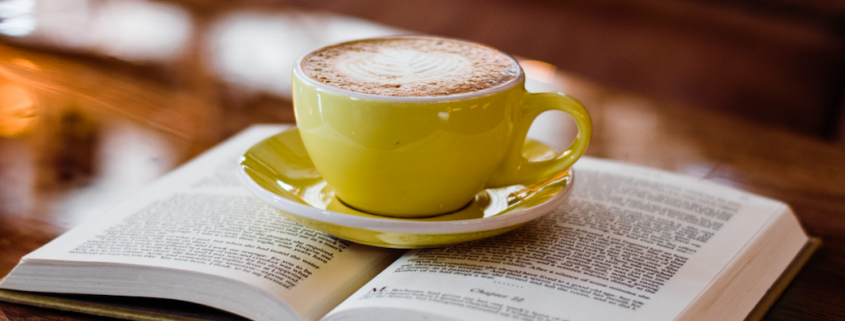

Our goal for Cliche Cafe is to be an open community space for the public to find a place where they can relax, work on things with our charging outlets, and try something new by experiencing the foods and drinks we have to offer.
We have a seasonal rotating menu for food and drinks to keep things fresh and new. Menu items are all inspired by Asian cuisine to help people learn more about different food and cultures. We also have a special bubble tea bar with original drinks where people can enjoy the combination of bubble tea flavors & alcohol.
Some of Cliche Cafe's monthly events include book club meets, mahjong games and lessons, guest speakers, board game nights, and cooking events.

We do our best to support the local community by hosting live music performances by local musicians, showcasing art created by locals every season, and we also have events with information and resources to help guide people on the right path for new skills or career changes.